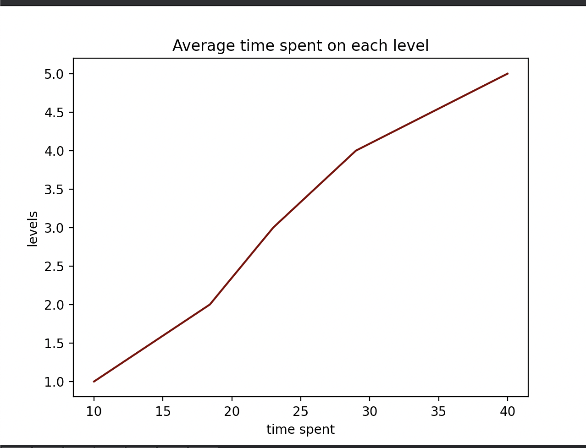

The Science of Memory
The network of neurons in our brains are the key to storing and retrieving memories
All of these little bits and pieces of information are then stored in different areas of your brain.
Your neurons (the nerve cells in your brain) pass signals to each other about what you perceived, effectively "talking" with each other and building either temporary or long-lasting connections.
It's that neural activity and the strength of those connections that make a memory, neuroscientists believe.
There are two kinds of memory: short-term and long-term.
Short-term or working memory is like your brain's scratchpad.
It's when your brain temporarily stores information before either dismissing it or transferring it to long-term memory—for example,
remembering what you want to order for lunch before calling the takeout place.
Once your food is delivered and eaten, your brain can let go of that info.
Long-term memories are those memories you hold on to for a few days or
many years--things like how to ride a bike or the first dinner you had with the first person you fell in love with.
So the game focused more on short - term memory --- Your brain's scratchpad!
Here is a graph of the time people spent averagely on this game plotted by matplotlib

Evaluation:
Based on the graph above and data obtained from the users. The average time spent on the whole game is around: 184.4s.
The categories are:
1: Shorter than 40 seconds: Absolute Genius
2: Shorter than 80 seconds: You have an outstanding short term memory
3: Shorter than 120 seconds: You are amazing at memorizing stuff
4: Shorter than 160 seconds: You are pretty good at this game
5: Shorter than 200 seconds: You did well, just like how people do normally
6: Longer than 200 seconds: You did well, don't worry too much!
All information is collected from this article
Please go back to the program after you are done checking